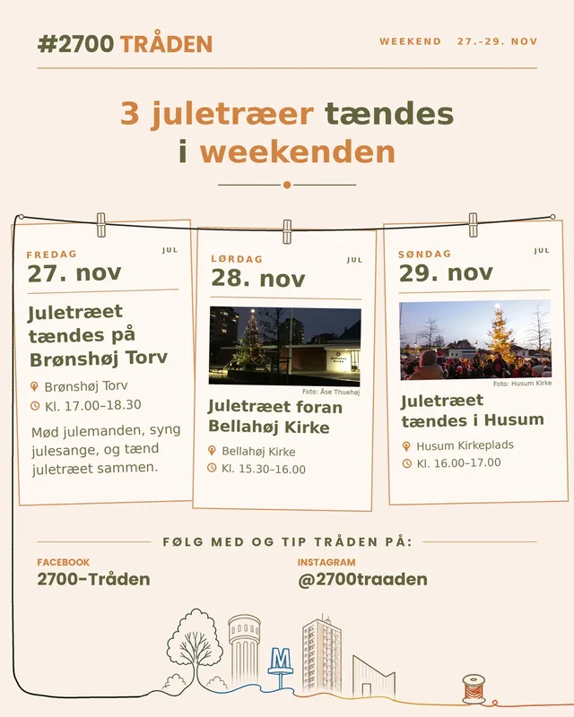

Hvad sker der i 2700 i denne weekend?
Fredag 27. november
Fold en STOR julestjerne
Bellahøj Kirke · Kl. 09.45–11.30 · Gratis
Fold store julestjerner af kirkens gamle bannere. Materialet kan tåle vejret, så stjernen kan også hænge udenfor.
Læs mere
Sidste dag: Lisbeth Aggerbeck udstiller i Spisehuset
BRØK, Brønshøj Kulturhus · Kl. 10.00–21.00 · Gratis
Sidste chance for at se billedkunstner Lisbeth Aggerbecks billeder i Spisehuset.
Læs mere
Julemarked i Sognehuset
Brønshøj Sognehus, Brønshøj Kirkevej 4D · Kl. 15.00–20.00
Strik, hjemmelavet julepynt, gamle nisser, keramik, smykker, slikbod, sylt og julebag. Pigekoret har café i kælderen, og der er et krea-bord, hvor du kan lave din egen julepynt.
Læs mere
Juletræstænding på Brønshøj Torv
Brønshøj Torv · Kl. 17.00–18.30
Mød julemanden, syng med på julemusikken, hør juletalen, og tænd juletræet sammen med resten af bydelen.
Læs mere
Lørdag 28. november
Hoppeloppen – selvbetjent legestue (1–5 år)
BRØK (Bevægelsen) · Kl. 09.00–17.00 lørdag og søndag · Gratis
En lille indendørs legestue, hvor børnene bygger deres egen balancebane. Kun for 1–5-årige. Ingen tilmelding.
Læs mere
Musikalsk Legestue (1–4 år)
Husum Kirke · Kl. 10.00–12.00 · Gratis, tilmelding
Syng, spil og dans med dit barn i kirkerummet – bagefter legestue med kaffe, boller og saftevand.
Læs mere
BRØKs værksteders julemarked
BRØK, Brønshøj Kulturhus · Kl. 10.00–15.00 · Gratis
Stande med keramik og andre hjemmelavede sager fra BRØKs værksteder. Gratis juleworkshop, hvor børn og voksne laver julepynt af stof, og skattejagt for børn med en lille præmie.
Læs mere
Julefilm (2–8 år)
Brønshøj Bibliotek · Kl. 10.30–13.30 · Gratis
Små julefilm med Rita og Krokodille, Hunden Ib og Vitello. De kører i loop, så I kan gå ind og ud, som det passer jer.
Læs mere
Juletræet foran Bellahøj Kirke tændes
Bellahøj Kirke · Kl. 15.30–16.00
Kirken tænder juletræet og synger advents- og julesalmer. Bagefter er der skoldhed gløgg og æbleskiver – gratis.
Læs mere
Søndag 29. november
Husumvold Søndag: Damer, der var for meget
Husumvold Kirke · Kl. 11.45–13.15 · Gratis
Forfatter Sara Alfort fortæller om skandinaviske kvinder, der med kunst, frihedstrang og livssult var med til at bane vejen for det samfund, vi har i dag.
Læs mere
Freja HK – CIK
Bellahøj Hallen · Kl. 12.15
Freja HK's kvinder spiller hjemme i Danmarksserien.
Læs mere
Blues Man 2026: Krølle Erik, Liv Skotte og Delta Blues Band
BRØK, Brønshøj Kulturhus · Kl. 14.00–18.00 · 250 kr.
Tre koncerter på én eftermiddag, når Music House Brønshøj hylder Troels Jensen og de danske bluespionerer.
Læs mere
Juletræstænding i Husum
Husum Kirkeplads · Kl. 16.00–17.00
Husum tænder sit eget juletræ på første søndag i advent. Julemanden kommer, kirkens børnekor synger, og der er julegodter og noget at drikke.
Læs mere
Har vi overset noget, der sker i 2700? Smid det i kommentarerne — så hjælper I med at gøre Fælleskalenderen bedre.